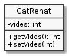

Exercici 04_06. Vides sempre correctes¶
Exercici 04_06. Vides sempre correctes¶
Context
Carpeta de lliurament:
04_06_vides_correctes/Continguts relacionats: Classes i objectes
Com lliurar-lo: instruccions
Enunciat
Considera la següent implementació de GatRenat:
1 2 3 | public class GatRenat {
public int vides = 7;
}
|
Aquesta declaració ens permet fer el següent:
1 2 3 4 5 6 7 | public class UsaGatRenat {
public static void main(String[] args) {
GatRenat renat = new GatRenat();
renat.vides = -12;
System.out.println("El gat Renat té " + renat.vides + " vides");
}
}
|
Que UsaGatRenat funcioni no ens hauria de deixar massa tranquil·litat.
-12 de vida? Potser per un joc de zombis podria ser vàlid però en general
no sembla quelcom gaire desitjable.
El que voldríem és aconseguir evitar que ens puguin assignar un valor no vàlid per les vides del gat Renat.
No et pensis que és quelcom a l’abast de tots els llenguatges de programació. Per Java, però, veurem que és força senzill.

Considera aquesta nova versió de GatRenat:
1 2 3 4 5 6 7 8 9 10 11 | public class GatRenat {
private int vides = 7;
public int getVides() { // retorna el nombre de vides
return vides;
}
public void setVides(int novesVides) { // modifica el nombre de vides si ens donen un de vàlid
if (novesVides >= 0) {
vides = novesVides;
}
}
}
|
Contesta les següents preguntes:
Què passa si intentes executar el següent codi? Perquè creus?
1 2 3 4 5 6
public class UsaGatRenat { public static void main(String[] args) { GatRenat renat = new GatRenat(); System.out.println("El gat Renat té " + renat.vides + " vides"); } }
Què tal si modifiquem lleugerament el codi anterior per aquest?
1 2 3 4 5 6
public class UsaGatRenat { public static void main(String[] args) { GatRenat renat = new GatRenat(); System.out.println("El gat Renat té " + renat.getVides() + " vides"); } }
Fixa’t que ara estem fent servir
renat.getVides()en comptes de directamentrenat.vides(). Funciona ara?Com es pot determinar a
UsaGatRenatquerenatté 5 vides?Inclou el codi a la resposta i la sortida que et genera.
Què passa si intentem assignar-li -12 en comptes de 5 vides?
Inclou el codi, la sortida i la teva explicació.
Un cop hem vist què passa des de
UsaGatRenattoca experimentar com es comporta aquestprivatedes delmain()del propiGatRenat.Experimenta afegint a la darrera versió de
GatRenatla mateixa declaració demain()que apareixia a la primera versió deUsaGatRenatd’aquesta pàgina. És a dir:1 2 3 4 5 6 7 8 9 10 11 12 13 14 15 16
public class GatRenat { private int vides = 7; public int getVides() { // retorna el nombre de vides return vides; } public void setVides(int novesVides) { // modifica el nombre de vides si ens donen un de vàlid if (novesVides >= 0) { vides = novesVides; } } public static void main(String[] args) { GatRenat renat = new GatRenat(); renat.vides = -12; System.out.println("El gat Renat té " + renat.vides + " vides"); } }
Què passa en intentar compilar i executar aquesta versió? Perquè creus? Ho veus coherent?
Considerant aquesta darrera versió de
GatRenat, és possible aconseguir assignar un nombre de vides negatiu a una instància deGatRenatsense modificar el codi de la classeGatRenat? Perquè o Com?Com descriuries el paper de
publiciprivatea les propietats d’una classe?Aquesta implementació de
GatRenatdisposa de getter i de setter. T’has plantejat què passaria si només en tingués getter? i si només en tingués setter? i si no en tingués cap dels dos?Per cert, t’has fixat que els mòduls
getVides()isetVides()tenen una definició lleugerament diferent als mòduls que hem declarat fins ara en aquest curs? En concret, no els falta alguna cosa?Si no se t’acut, considera revisar quan varem veure per primer cop un mòdul que no fos el
main().De moment només cal que identifiquis la petita diferència en la declaració, però si tens molta curiositat, experimenta què passa si declares
getVides()de la mateixa manera quedibuixaQuadrat().